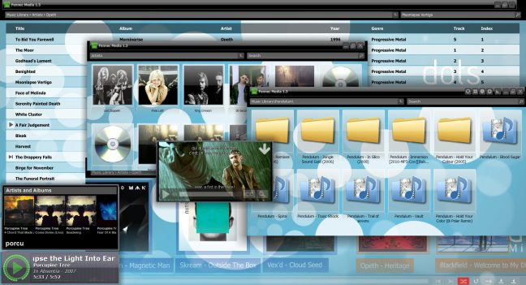

Fennec Media Project
Open source universal multimedia player and transcoder.
Concept of the new version, with a new skin, REX support, new MPEG tag handler, quick smart search
features for media library and vector graphic based UI.
Currently developing the new skin and fixing video display performance issues and video decoder issues, The codebase have been transfrred into GCC/mingw64, in order to build from source code or to contribute visit the official Github Repository.
Currently developing the new skin and fixing video display performance issues and video decoder issues, The codebase have been transfrred into GCC/mingw64, in order to build from source code or to contribute visit the official Github Repository.
Downloads
Version 1.4
Microsoft Windows Installation (MSI)
There are some issues with video support
Version 1.3
Microsoft Windows Installation (EXE)
On Windows Vista and later, use Right Click -> Run as Administrator
Source Code Archive (July 16, 2010)
7-zip Archive
Source Code Archive (February, 2009)
Microsoft Windows Installation (MSI)
Use 7-zip to extract source files.
Source code repository has been moved to Github
Older Releases...
Fennec Media Suite - Introduction
Fennec Media Suite is an open source universal media player/transcoder for Microsoft Windows platform (currently working on porting). Written in C/C++ with Assembly optimizations, allowing great performances and HD playback for almost every audio/video file format available (see feature list below). Fennec player is released under GNU General Public License, so you can obtain/modify source code files and contribute your support to the project freely.

Version 1.3
Introduces smart media search, album art downloader/manager for media library, video playback support and external subtitle file decoding for almost every subtitle file format (including SubRip, Advanced SubStation Alpha, AQTitle, Scantitle, Spruce...)Features
- Supports playing and converting: mpg, mpeg, avi, vob, flv, 3gp, mov, qt, asf, wmv, divx, mkv, mp4, ogm, rm, rmvb, swf, mp4, m2a, m4a, aac, amr, flac, ape, mpc, raw, aif, aiff, wav, wave, au, caf, snd, svx, paf, fap, gsm, nist, ircam, sf, voc, w64, mat4, mat5, mat, xi, pvf, sds, sd2, vox, spx, ogg, wv, ac3, mod, nst, mdz, mdr, m15, s3m, stm, s3z, xm, xmz, it, itz, mtm, 669, ult, wow, far, mdl, okt, dmf, ptm, med, ams, dbm, dsm, umx, amf, psm, mt2, mid, midi, rmi, smf, mp1, mp2, mp3, cda, wma...
- Audio CD ripping with batch tagging.
- Joining multiple media files into a single file
- Highly dynamic plug-in interface, so you can add/remove plug-ins and edit their settings manually.
- Visualizations.
- Multichannel support (up to 16 channels) for both playback and transcoding.
- A customizable 10 band equalizer for each channel.
- High definition audio processing and output (64bit floating point audio processing, 8bit fixed point-32bit floating/fixed point to 64bit floating/fixed output).
- Tag viewing and editing.
- Formatting file name according to tags.
- Group tag editing (copying and pasting selected tags into many files).
- Equalizers on conversion/ripping and joining.
- Volume and gain adjustments on conversion/ripping and joining.
- Group tagging on conversion (could apply some constant tags into every file converted, artist name etc.).
- Date and time editing on conversion/ripping and joining.
- Editable DSP effects: you can add many effects simultaneously into the playing media and change the order of effects (you can add a bass boost and a reverb at the same time, boost bass before/after reverb etc.).
- Skins (Fennec player doesn't have a user interface itself, it depends on plug-ins you can select to display the user interface).
- Color schemes and manual tints for skins.
- Automatic volume fade up/down.
- Can decode multiple files at the same time (you can keep something playing while doing conversion, a new example for this is 'preview' system).
- File association selection with many options (Fennec player comes with an icon library which has an icon for almost every file format).
- High quality icons for file association settings (256x256 pixel 32bit).
- Multilingual user interface (completely UNICODE user interface so everyone can create a simple text file called a language pack to modify user interface language).
- Highly editable global and local shortcut keys interface.
- Fast and customizable media library.
- Windows shell integration (Fennec player places a context menu item group with open/add options).
- Audio file preview (you can listen to a media file using headphones without interrupting the file which is being played; in order to experience this feature, you need to have two sound cards or multi-streaming enabled sound card).
- Video zoom-in, zoom-out, vertical/horizontal scaling.
- Dual subtitle display - you'll be able to select primary and secondary subtitles for video files, preferably in two languages.
- Supports reading over 50 subtitle formats and over 10 playlist formats (with Unicode support).
Released under GNU General Public License (GPL) version 3, 2, 1 and other open source licenses.
Check the source code package for more details.
Powered By

Check the source code package for more details.
Powered By